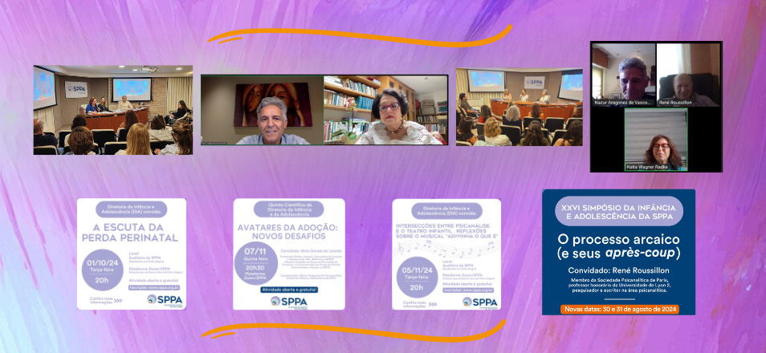

Impactos da catástrofe climática em crianças e adolescentes
- 
 Psicanalistas teceram importantes considerações a respeito do arcaico nas relações mãe-bebê
Psicanalistas teceram importantes considerações a respeito do arcaico nas relações mãe-bebê
Ao longo desse primeiro semestre, a Diretoria da Infância e Adolescência buscou, em suas atividades, contemplar temas relativos aos processos arcaicos do psiquismo e sua importância no desenvolvimento do ser humano. Assim, a atividade inaugural da Diretoria, “Pensando no Arcaico a partir da Relação Mãe-Bebê”, contou com a presença de Débora Regina Unikowsky, membro efetivo e didata da SPRJ, analista de crianças e adolescentes, atual diretora da Comissão de Formação de Crianças e Adolescentes de sua sociedade e uma das coordenadoras do grupo de observação de bebês pelo Método Esther Bick da SPRJ. O evento teve, também, a apresentação do trabalho de Nara Caron, membro efetivo com função didática de nossa sociedade.
A segunda atividade proposta pela DIA pretendeu estimular o estudo relativo ao pensamento do autor René Roussillon, convidado do XXVI Simpósio da Infância e Adolescência da SPPA. Intitulada “Aproximações ao pensamento de Roussillon”, a reunião contou com a condução dos colegas Adriana Pacheco Pires e Cristiano Freitas Frank, que apresentaram uma breve trajetória do convidado, bem como algumas reflexões sobre seu pensamento teórico. Esta atividade foi uma reunião preparatória para o nosso evento mais aguardado do semestre, que ocorreria no final do mês de maio. Porém, diante da tragédia das enchentes que assolaram o estado e mobilizaram todo o país, a DIA entendeu que era pungente a necessidade de adiamento do Simpósio.
O convidado, René Roussillon, psicanalista da Sociedade Psicanalítica de Paris, tem focado seus estudos nos sofrimentos narcísicos identitários que envolvem traumas precoces e recorrentes. Para o pesquisador e escritor contemporâneo, pensar o arcaico como o originário incessante que segue influenciando e sendo influenciado pelas vivências atuais pode contribuir nos estudos para o tratamento desses sofrimentos em uma ampliação da clínica, sem perder o estatuto psicanalítico.
Junto à decisão de adiamento do Simpósio, e considerando a importância de pensarmos o trauma vivido pelos gaúchos, a DIA avaliou como relevante refletir sobre os impactos que essa calamidade teve no público infantojuvenil. Realizou-se, então, no início do mês de junho, a atividade “E nossas crianças e adolescentes vivendo a catástrofe?” que contou com a convidada Mônica Cardenal e com os comentários da psicanalista e membro efetivo da SPPA com função didática Maria Elisabeth Cimenti. Mônica é psicanalista, membro com função didática da Associação Psicanalítica de Buenos Aires, chair do comitê da IPA sobre Assistência Psicanalítica em Crises e Emergências e consultora do comitê da IPA de Psicanálise de Crianças e Adolescentes. Essa atividade foi realizada em parceria com a Diretoria da Comunidade da SPPA.
Por fim, com o desejo de um segundo semestre mais equilibrado, a DIA espera a todos no XXVI Simpósio da Infância e Adolescência da SPPA: O processo arcaico (e seus après-coup). Nossas novas datas são 30 e 31 de agosto, e o Simpósio seguirá em formato totalmente online.